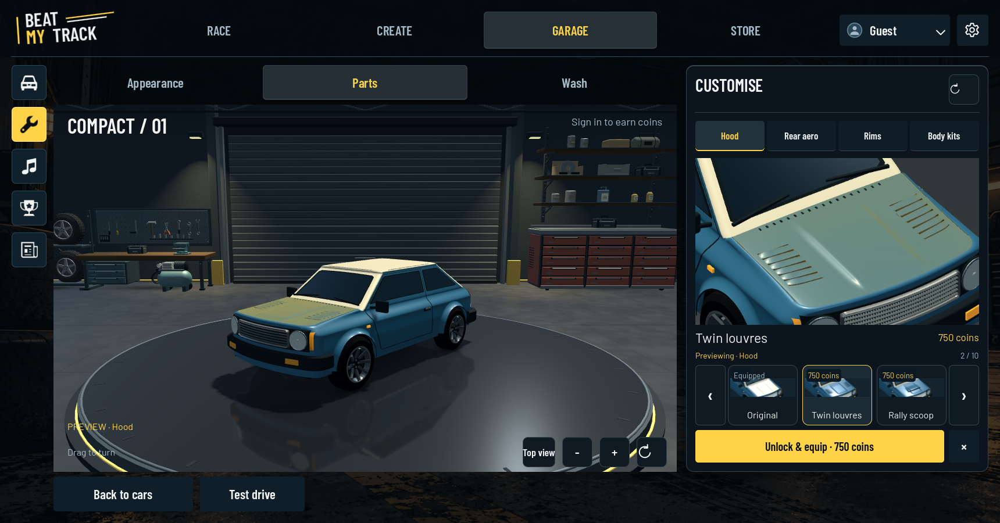
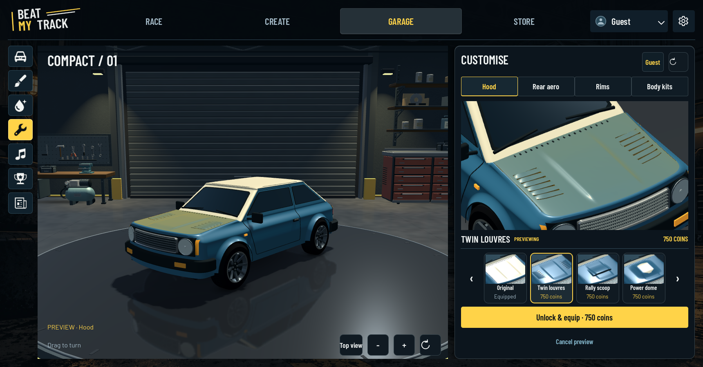
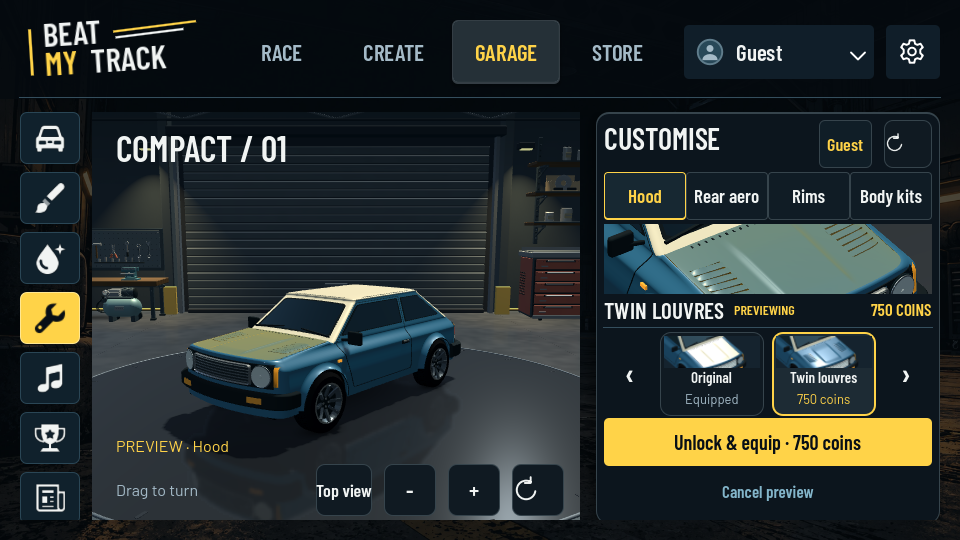
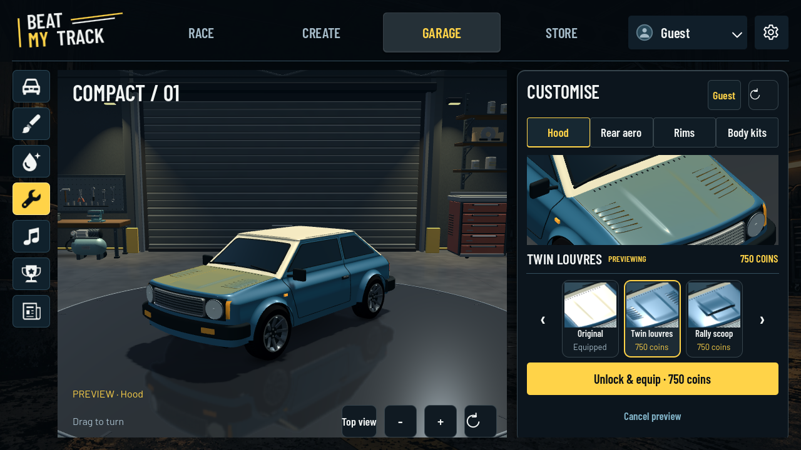
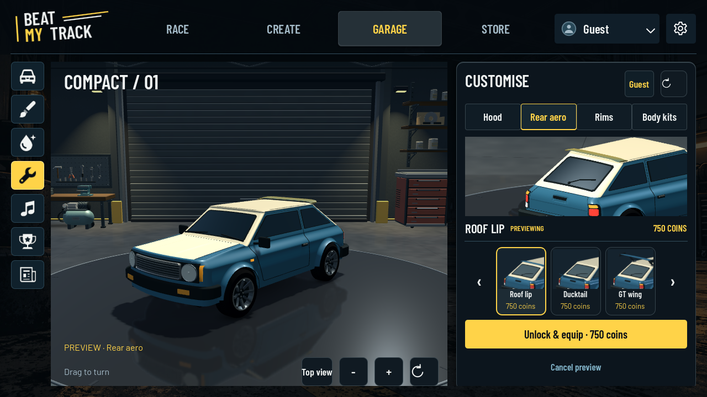
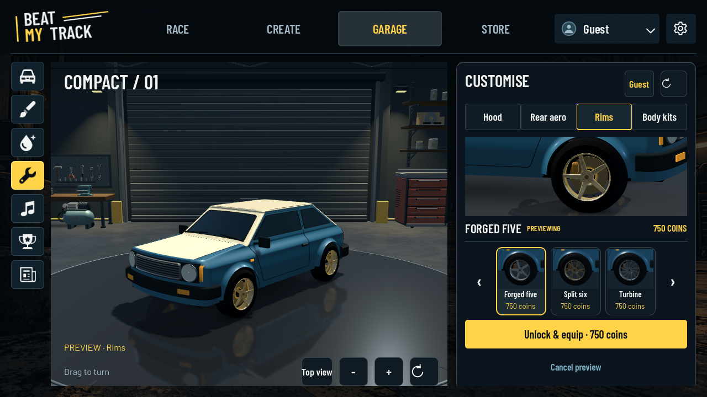
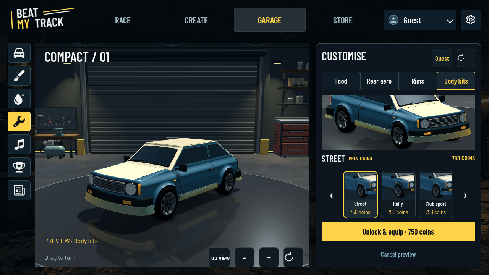
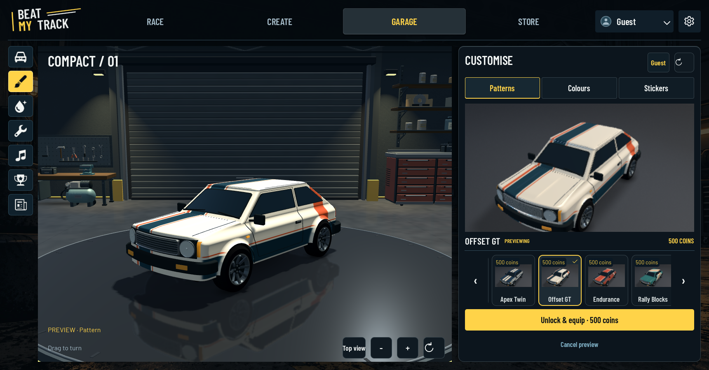
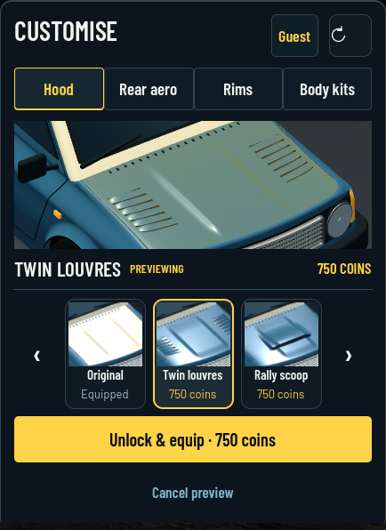
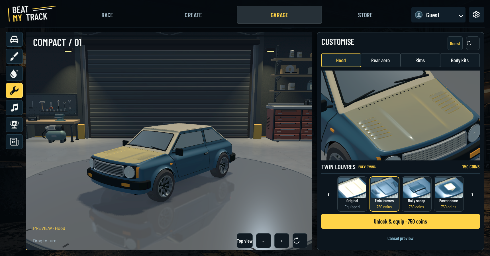

Actual isolated App captures, 24 October 2026. Slide to compare the previous layout (left) with the revised layout (right). The car, its paint and camera use the game's native assets.








Captured native frames showing snapping and bounded end bounce.


Exact commands, outcomes, hashes and limitations · Scoped checkpoint
Final focused results: 246 headless / 267 Compatibility / 267 desktop Mobile. Sidebar 592, cleanliness 262, retained customisation 1396, App 141 and parser 1119 pass. Client reload and owner visual/touch acceptance remain. No physical-device test or real purchase was performed.